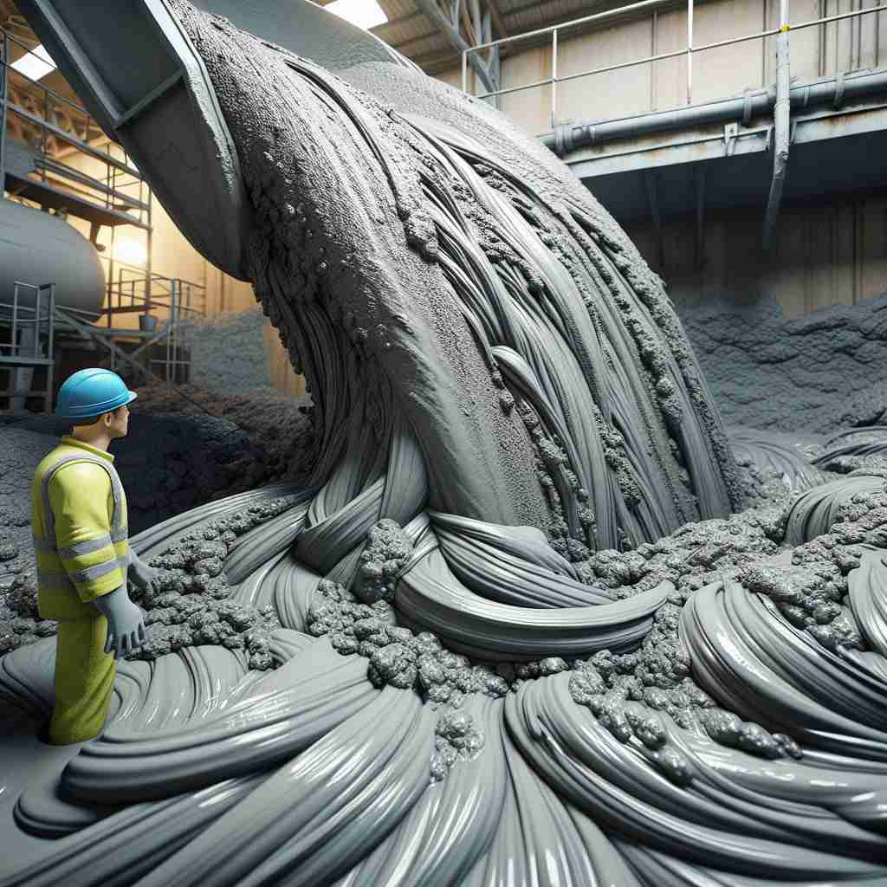

💬 The scientist prepared a thick liquid slurry for the experiment.

💬 The factory produces a thick slurry mixture for construction.
🗝️ n. a thick liquid mixture of a solid and a liquid
🖼️ 在一个建筑工地上，工人们正在搅拌一种类似水泥的混合物。这种混合物浓稠而均匀，包含了水和各种固体粉末，正是'沙浆'的典型例子。
🔍 想象一个厨房搅拌机里的浓稠混合物，这就是'slurry'的核心含义。无论是建筑用的水泥浆、农业用的肥料浆还是工业用的煤浆，都是固体与液体的浓稠混合物。记住这个核心图像，就能轻松联想到'slurry'的各种应用场景。
💬 The scientist prepared a thick liquid slurry for the experiment.
💬 The factory produces a thick slurry mixture for construction.
🌳 “slurry” 是一个名词，源自词根 “slur-”，与松散或稀释有关，后缀 “-y” 表示具有特定性质的物质或状态。整个单词指的是一种含有水分的稀泥浆或悬浮液。
💡 记忆“slurry”时，可以联想稀泥浆的状态，如同“slush”（烂泥），都是松软且含水的物质。想象这些物质都具有流动性，帮助记住其含义。
🗝️ n. a watery mixture of animal waste used as fertilizer
🖼️ 在一个农场里，农民正在准备施肥。他们使用了一种湿润的混合物，里面含有动物粪便和水。这种混合物具有丰富的营养，是植物生长的理想肥料，正是'沙浆'作为肥料使用的场景。
💬 The farmer spread slurry on the fields to improve soil fertility.
❓ 应用核心含义到农业领域
🗝️ n. a mixture of fine particles of coal and water used in power stations
🖼️ 在一个发电厂中，一个巨大的容器里充满了煤粉和水的混合物。这种'沙浆'被送入锅炉，用于生产电力，展现了工业应用中的'沙浆'。
💬 The power plant uses coal slurry as fuel.
❓ 应用核心含义到工业领域
🗝️ v. to mix into or convert to a slurry
🖼️ 在一个化工实验室里，研究人员正在将固体颗粒与液体结合，慢慢搅拌成均匀的混合物。这个过程正是将物质'转化为沙浆'的生动展示。
💬 They slurried the ore before processing it further.
❓ 由名词转化为动词，表示制作浆液的过程